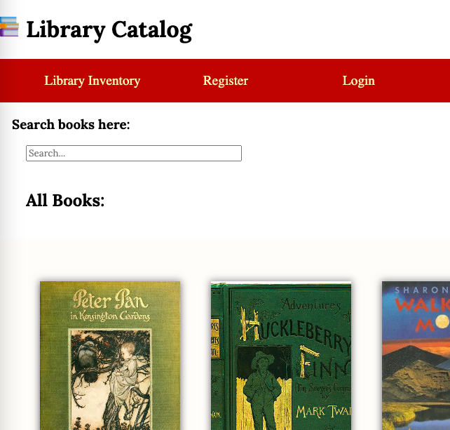
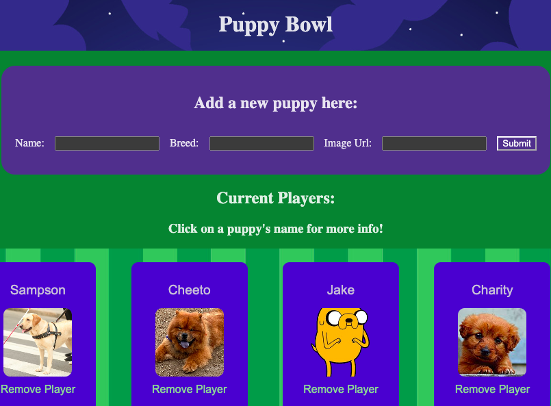
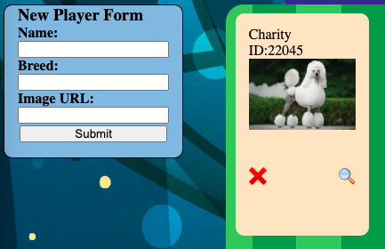

Projects
Book Buddy
Created a web application that allows the end-user to make and view an account, log in, check out, and return books.
- Designed, developed, debugged, and deployed the web application.
- Designed the user interface (UI) and user experience (UX) of the web application
- Wrote clean, maintainable, and well-documented code.
- Conducted unit testing, integration testing, and debugging to ensure software quality.
- Used github to store and save commits and deployed using netlify
- Tools: Javascript, React, CSS, HTML, APIs
Puppy Bowl React
Created a web application that allows the end-user to view a list of puppies, see details, and add or remove puppies.
- Designed, developed, debugged, and deployed the web application.
- Structured the web application’s components and user interface (UI) layout.
- Managed the web application's state using React hooks and implemented routing using React Hooks.
- Debugging, investigating and fixing bugs.
- Tools: Javascript, React, CSS, HTML, APIs
Puppy Bowl JS
Created a web application that allows the end-user to view a list of puppies, see details, and add or remove puppies.
- Designed, developed, debugged, and deployed the web application.
- Structured the web application’s components and user interface (UI) layout.
- Used fetch, async, and await to leverage CRUD against a REST API to perform common functions of a website.
- Debugging, investigating and fixing bugs.
- Tools: Javascript, CRUD, CSS, HTML, APIs